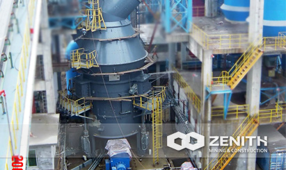

- 
LUM Ultrafine Vertical Roller Mill
Vertical roller mill is a grinding processing equipment for cement, cement clinker, slag and so on. It has a simple structure and low cost of manufacture.
Base on Zenith abundant experience in producing vertical grinding mill and the latest technology, we developed the LUM Ultrafine Vertical Roller Mill, which gets high reputation from customers. It sets grinding, drying, classifying and transportation as a whole and take little space.
LUM ultrafine vertical roller mill Composition and structure
LUM ultrafine vertical roller mill mainly consists of motor, reducer, roller device, disc device, pressing device, separator, body and petrol stations and other components. It turned out to make a one-time completion of superfine powder grinding, grading and transportation vision reality of the job.
Application of vertical roller mill
LUM Series Ultrafine Vertical Roller Mills are widely used in grinding non-flammable and non-explosive materials under 9.3(the Moh's hardness), such as grinding quartz, feldspar, calcite, talcum, barite, fluorite, iron ore, copper ore quartz, slag, cement clinker, zircon sand, fly ash and carborundum, coal, etc.
Working Principle of vertical roller mill
Disc drive motor through reducer rotating air lock feeder material through the inlet falls from a central disc, while hot air from the inlet into the mill. As the disc rotates, the material under the centrifugal force, moving to the edge of the disc, the disc through the annular groove when subjected to roller compacted and crushed.
After crushing the material in the disc edges with high-speed airflow from the air ring, large particles fall directly on the disc re-grinding, airflow through the upper part of the separator material when, under the effect of rotation of the rotor, meals fell from the cone disc re-powder grinding, qualified powder grinding out together with the airflow through the dust collection system to collect, namely products that contain moisture material is dried in hot air in contact with the process, by regulating the air temperature, the humidity of materials to meet different requirements, to achieve the required product moisture. By adjusting the separator can achieve the desired thickness of the different products.
vertical roller mill Benefits and advantages
- It is quite environmentally friendly, LUM is of little dust and noise.
- The final products has little iron and the whiteness and purity are quite high.
- LUM use PLC/DCS automatic control system, well save the cost of operators.
- LUM has excellent grinding-efficiency for the special design of roller shell and grinding plate curve..
The tacnology data
| Model | LUM1125 | LUM1232 | LUM1436 |
| Wheel diameter（mm） | 1100 | 1200 | 1400 |
| Capacity （t/h） | 5~12 | 7~16 | 8~18 |
| Fineness 400~650Mesh | ~D97 | ~D97 | ~D97 |
| Material Size（mm） | <10 | < 10 | <10 |
| Moisture | <3% | <3% | <3% |
| Main Motor Power（KW） | 250 | 315 | 355 |
| Roller(set) | 3 | 3 | 3 |
| Classifier Motor Power | 15 KWx5 | 15 KWx7 | 15 KWx7 |